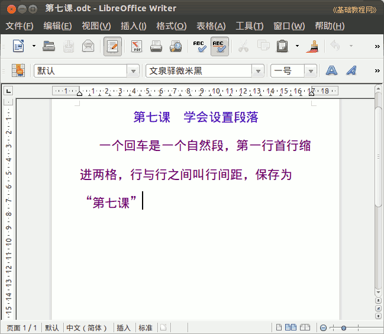

2011-2012 第二学期七年级文字处理和网页教学设计
作者：TeliuTe 来源：基础教程网
七、学会设置段落 返回目录 下一课
（一）教学设计
1、学习目标：学会使用分段
2、注意事项：板书写的长一些，这样可以看出自动换行和自然段的区别。
3、教学过程：
1）教师准备学案和板书；
2）学生整队进入，开机抄黑板上笔记；
3）教师讲解板书演示操作；
4）学生打指法、日志、完成操作；
5）教师打勾记录学生指法成绩，检查日志和操作；
注：学生抄完笔记就开始打指法、日志，老师讲完后再继续完成；
（二）板书设计(学生笔记)
第7课 学会设置段落
一个回车是一个自然段，第一行首行缩进两格，行与行之间叫行间距。保存为“第7课”
操作图示：

（三）课后记 2012-03-13 18:00
==
下午的课有些昏沉的，让敲铃了再进
进来就想着偷菜的，弄的网络卡在那儿
--
下次再不退的就直接重启好了，要不老卡着也麻烦
慢慢养成习惯，来了就做练习写完了自己再练就好
--
做的快的2、3分钟就弄好了，慢的一节课也不行
要不把每次的最高成绩写入数据库，会话关了就没有了
--
发现错误要及时纠正，只是顾此失彼
抓吵闹的又忘记吃零食的，还有关机之类的
--
各个班有自己的特点，好的地方和容易犯的毛病
这个也得细心了才好，只是弄得有些累的
--
把内容设计好，学习好的要找些事情做才好
把光盘复制进去吗？以前的网站还没复制进去
--
抽空弄一下也好，把03年以后的网站放进去
还有哪些可以学习的呢，把我这个网站放校园网里吧
--
就是要去掉那些广告也麻烦，不去行不行呢，
好像没事，反正都在最底下的页面，没事应该
--
返回目录 下一课
本教程由86团学校TeliuTe制作|著作权所有
基础教程网：http://teliute.org/
美丽的校园……
转载和引用本站内容，请保留作者和本站链接。